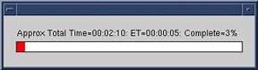

- 00000018WIA30BA1F20GYZ
- id_131070683.1
- Feb 10, 2023 6:12:16 AM
Multi-Coil Quality Assurance Tool
Prerequisites
| Required persons | Preliminary requirements | Procedure | Finalization |
|---|---|---|---|
| 1 | Not Applicable | 20 minutes per coil minutes | N/A minutes |
| Item | Quantity | Effectivity | Part number | Manufacturer |
|---|---|---|---|---|
| Coils and Phantoms for all coils to be tested are required. | - | - | - | - |
About this task
The Multi-Coil Quality Assurance (MCQA) Tool is a new tool that will simplify data acquisition and analysis of the signal-to-noise ratio (SNR) for surface coils. It will aid in detecting dead coil elements, as well as developing improved integrated signal-to-noise ratio (ISNR) specifications for all Multi-coils, independent of scanner instabilities. The tool does not rely on ROI placement as other SNR tools have in the past. Instead, it chooses slice locations based on coil geometry, acquires one Spin Echo Image, and turns off RF to gather a noise image. The noise mean of the 2D-noise-only image is subtracted from the 2D intermediate image.
The summed signal of the [2D intermediate image – noise mean] is calculated, and then this signal is divided by the Standard Deviation of the Noise of all pixels of the noise-only-image, to give the ISNR. See the formulas below.

Setup and Starting Multi-Coil QA (MCQA) Tool with Unified Phantom Set
About this task
All RF coil related tests must be run on a system that is well-calibrated and passing all system tests. The system should have passed “Install In Spec” (IIS), especially white pixel, correlated noise, and MCR (Multi-Coil-Receive) tool.
Procedure
- From Common Service Desktop (CSD) go to Service Browser and
select [Image Quality], Multi-Coil QA Tool and then Click here to
start this tool as shown in Figure 2.
Figure 2. 
- A confirmation pop-up displays, asking to continue. Click on
[Yes]. See Figure 5.
Figure 5. Confirmation Pop-Up 
- Upon start-up, a message stating, Phantom placement
and coil landmarking are critical for repeatable results will appear. If the landmark has been set correctly and there are
no air bubbles in the phantom, click [Yes] to continue. See Figure 6.
Figure 6. Startup Message  Note:
Note:The Status window of the MCQA Tool GUI will continuously update to give information on what the tool is doing at any point in time. A time bar (Figure 7) will appear, showing approximate total test time, elapsed time and percent complete. Once the test has completed, the name of the Results file will be listed, along with the Pass/Fail status and the results of the test in the MCQA Tool GUI.
Figure 7. Status Window 
- When the test is complete, test results display on the screen
(Figure 8). The PASS/FAIL status shows PASS if all coil elements are functioning
properly. If any coil elements display FAIL, call the GE HealthCare Representative
for coil repair.
Figure 8. Test Results 
Viewing Report Results
Procedure
- After running the Multi-Coil QA test, select View
Report Details to review the results. To review past results,
select File, Open Results File and select the desired coil results file. The Results Viewer will
open as shown in Figure 9. The Results file name and
Pass/Fail Results shown on the tool GUI will also be listed across
the top of the viewer.
Figure 9. Multi-Coil QA Results Viewer 
- To view all the Signal or Noise Images, select View
Signal Imgs or View Noise Imgs respectively,
and an image viewer will appear with one image per coil element, ordered
left–to-right and top-to-bottom. See Figure 10 for an example.
Figure 10. Signal and Noise Images 
- From the MCQA Viewer, select the Plot noise CC to display a
3D plot of the noise cross correlation data for the results being
viewed. The data shows the relative cross correlation of noise between
receiver channels. Green data is a one-to-one correlation. Red data
are correlations above the threshold. See Figure 11 for an example plot.Note:
There are currently no specs for the noise cross correlation data. It may be possible to determine patterns per coils and set specs as more data is collected.
Figure 11. Signal and Noise Images 
- Past Multi-Coil QA results are stored on the system, which allow
for the ISNR data to be trended over time. On the Multi-Coil QA Results
Viewer Window, select the Trend Data button,
and the MCQA Trend Viewer will pop up as shown in Figure 12.
Figure 12. MCQA Trend Viewer 
MCQA Trend Viewer
About this task
Every time the MCQA test is completed, a new Results file is generated. These results can be graphically trended within the MCQA Trend Viewer. All the Results Files available for trending are listed in the window to the left of the screen.
Procedure
- Select the Test and Image numbers of the data you would like to review from the middle scroll boxes.
- Choose the Isig, Noise, or Isnr radio button that corresponds with the desired graph.
- The data will be displayed over time (# of tests run). To change the vertical scale, enter new values into the Ymax and/or Ymin boxes at the top of the screen.
- Statistics pertaining to the existing data will be given in the box in the lower center section of the GUI.
Finalization
Procedure
- Select the Close button to exit out of the MCQA Trend Viewer and Results Viewer.
- Click Quit. This exits the MCQA Tool.
- Close any Image files still open on the screen.
- Remove all coils and phantoms from the system bore.